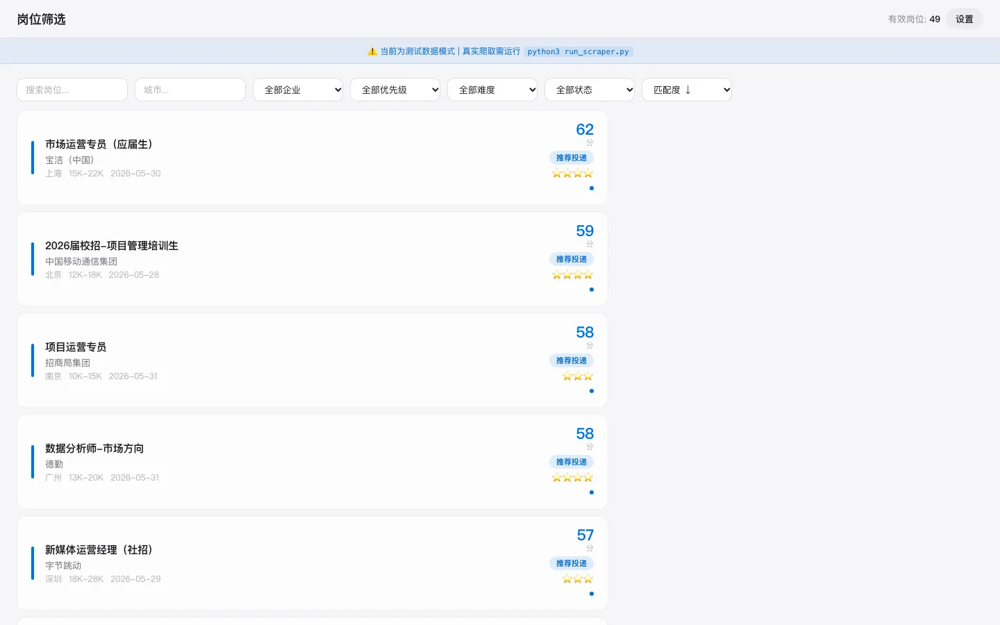
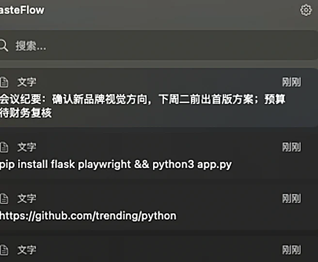
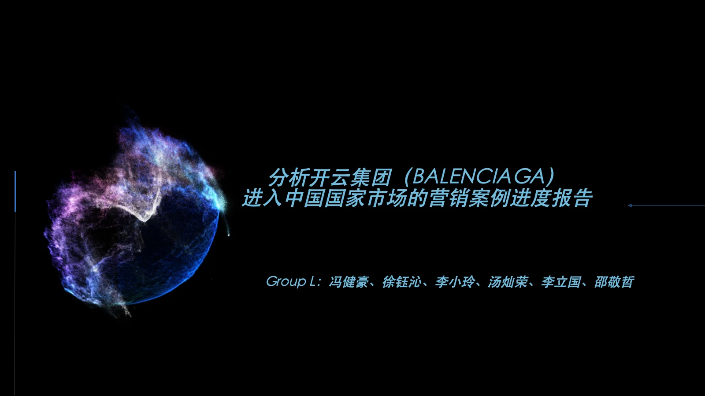
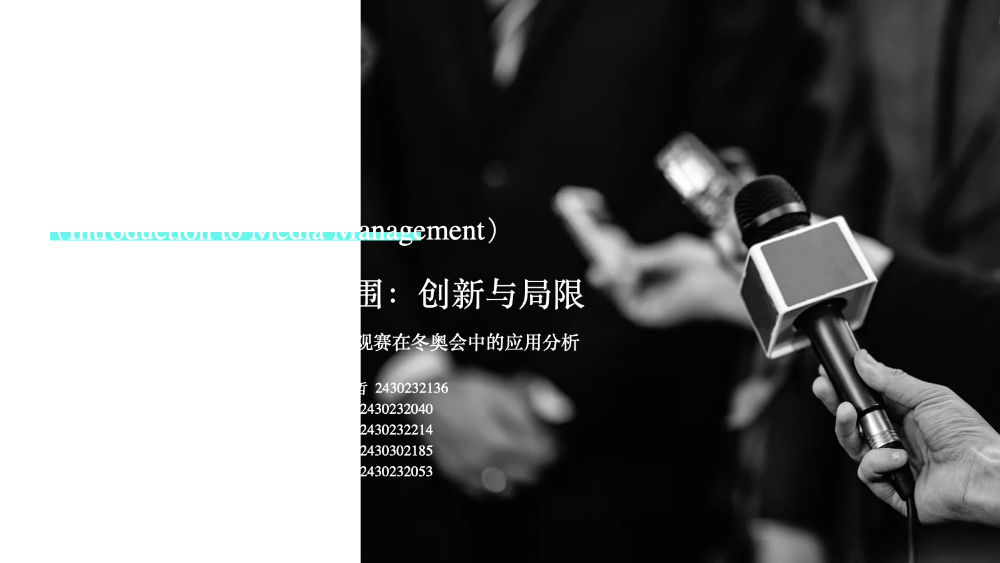
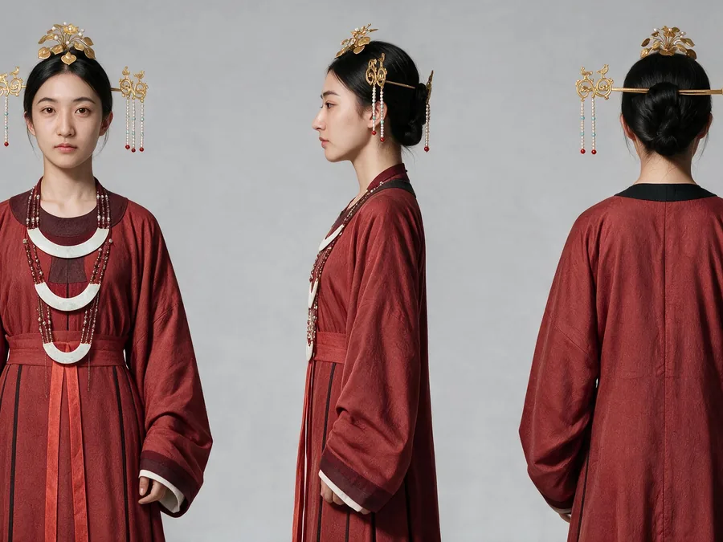
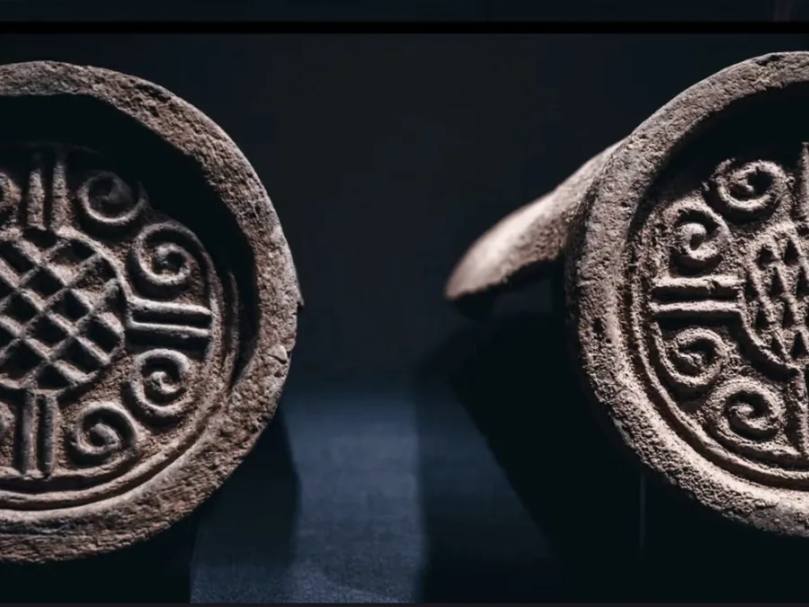
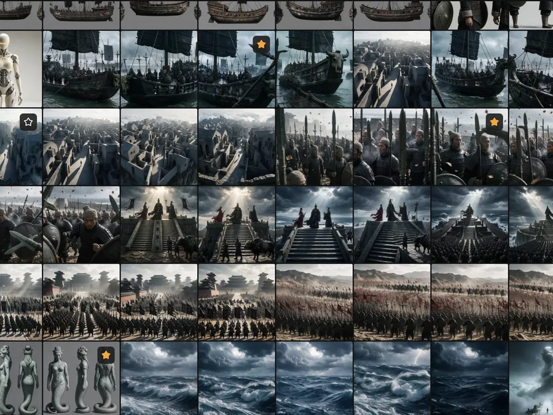
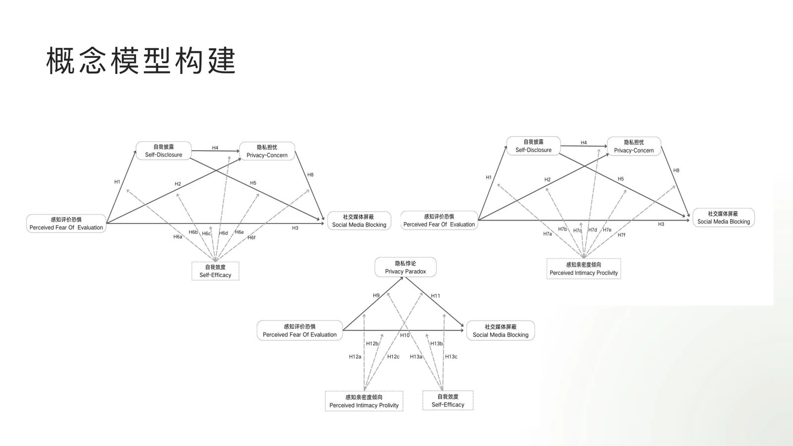
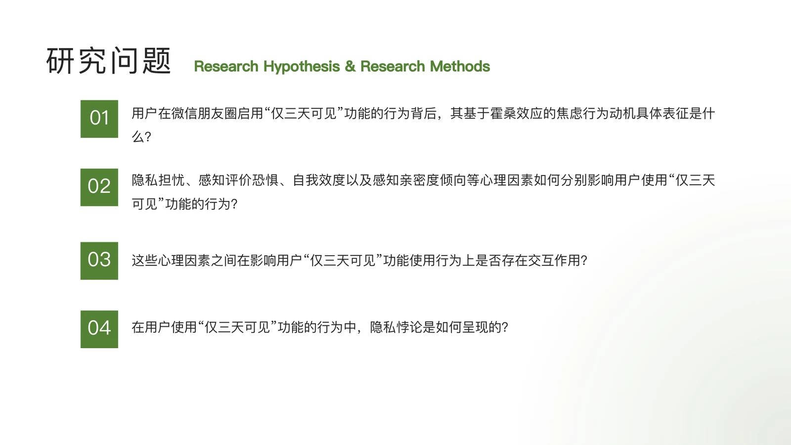

实习 · 策划与编导
长沙市特殊教育学校 · 市级展演统筹
2022.09 – 2022.12 · 教育实习
- 与校方共同担任市级“友子梦”展演导演与编导，设定整场叙事主线与 20 个节目编排逻辑，于梅溪湖大剧院公演
- 落地无障碍舞台方案：灯光提示替代音效、触觉节拍器辅助排练
- 分层拆解 300+ 师生排练任务，化解 4 次时间冲突，20 个节目零延误、零失误，获校方“优秀实习统筹”评价
活动统筹节目编排无障碍设计
不是单一赛道的专才，而是能打通内容、技术与研究的复合型候选人。
北师香港浸会大学（BNBU）传播学硕士，传媒管理方向。在读期间跨越 AI 内容创作、商业分析、学术研究 与 工具开发 四个领域——不是浅尝辄止，而是每个领域都有可展示的成果。
AI 短片《牛来自海上》从 180+ 支报名队伍晋级，经 50 支正赛入围阿那亚国际电影周海浪电影周主题活动黑客松终审 20 强，我作为核心创作者独立完成全片 90% 以上画面生成与分镜设计；独立开发岗位信息智能筛查系统，把人工筛岗的数小时压缩到分钟级；学术研究上，围绕社交媒体隐私行为搭建理论模型并提出 13 条研究假设。
以传播学训练为底层逻辑，以技术执行力为杠杆，寻找新媒体运营 / 内容营销（AIGC 方向）与项目运营方向的机会。
从文物考据到角色锚定，从分镜文案到渲染成片。独立完成 AI 短片主要画面生成，掌握 AI 内容生产全流程。
PESTEL → SWOT → 消费者行为 → 营销活动设计 → ROI 评估。作为队长主导小组完成巴黎世家中国市场分析。
搭建"焦虑→隐私评估→自我表露→使用行为"理论模型，提出 13 条研究假设，掌握问卷设计与量化分析。
两个独立完成的效率工具实验：信息筛选与匹配原型，以及 macOS 剪贴板历史工具 PasteFlow，体现从需求拆解到可用原型的执行能力。

面向求职筛选场景自研的 Web 应用：简历解析、JD 关键词匹配、岗位优先级排序三大模块，数据覆盖国聘、24365、拉勾、猎聘、牛客、应届生六大平台，把人工筛选岗位的时间从数小时压缩到分钟级。
独立实践 · 3075 行代码 · 演示数据为内置样本
查看源码
针对高频复制粘贴场景的 macOS 菜单栏工具：历史记录、搜索回贴、菜单栏常驻。纯原生 Swift + SwiftUI 开发，零第三方依赖，完整走通需求定义、架构设计（MVVM + Service 层）、开发与打包交付（.dmg）。
独立实践 · 纯原生实现 · macOS 14+ · 安装包见 Release
查看源码
作为团队队长，负责数据收集与汇总，在获取小组资料后提出优化建议。完整走通 PESTEL → SWOT → 消费者行为分析 → "艺术融合"营销活动设计的分析链路，含 2000 万美元预算方案与 ROI 评估。

传媒管理课程案例研究，聚焦国家级媒体数字化转型：从 8K/VR 观赛体验切入，分析 AI 剪辑提效、话题传播与文旅联动的创新与局限。
课程案例 · 数据引自公开报道，面试可提供口径来源。
以海上传奇为蓝本的 AI 短片。我作为核心创作者，独立完成全片 90% 以上画面生成，主导分镜设计与提示词工程，将创意落到可渲染、可剪辑的视觉方案。
点击左侧视频可播放成片。下方为项目过程中的角色与场景锚定设计节选。



我负责研究问题搭建设计与问卷。围绕社交媒体自我表露与隐私管理，构建"焦虑情绪 → 隐私评估 → 自我表露意愿 → 使用行为"的理论模型，提出 13 条研究假设。

概念模型构建
研究问题设计跨文化广告认知问卷（文化价值观 / 广告偏好 / 购买意愿维度），回收 300 份有效样本（信度 0.85），SPSS 因子分析识别 4 类消费动机；拆解 5 个跨国快消品牌在华广告策略，输出本地化内容策略建议。
Python 爬取小红书 / 微博 / 抖音 5000+ 条评论，完成 3000+ 条有效数据清洗、去重与标注；SPSS 聚类划分 4 类核心关注人群，R 语言完成情感倾向可视化，量化 3 类高风险舆情议题，输出“内容引导 + 场景适配”解决方案。